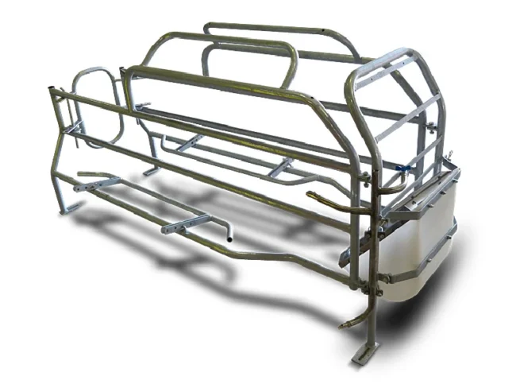

Equipamiento destacado
Algunos de nuestros equipamientos más representativos para granjas porcinas.

Comedero húmedo/seco 6 bocas
Facilita la alimentación de varias cerdas a la vez, optimizando consumo y evitando desperdicio.

Divisorio para sala de destete
Permite organizar los corrales de destete, separando lechones por tamaño y edad.

Pisos de lechón y de madre
Pisos seguros y confortables que garantizan higiene y protección para madres y lechones.

Jaula regulable
Adjustable según el tamaño de la cerda, ideal para maternidad y manejo eficiente.